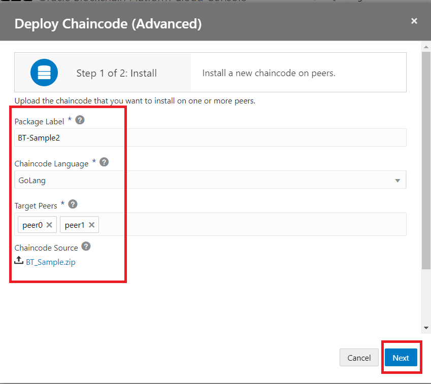
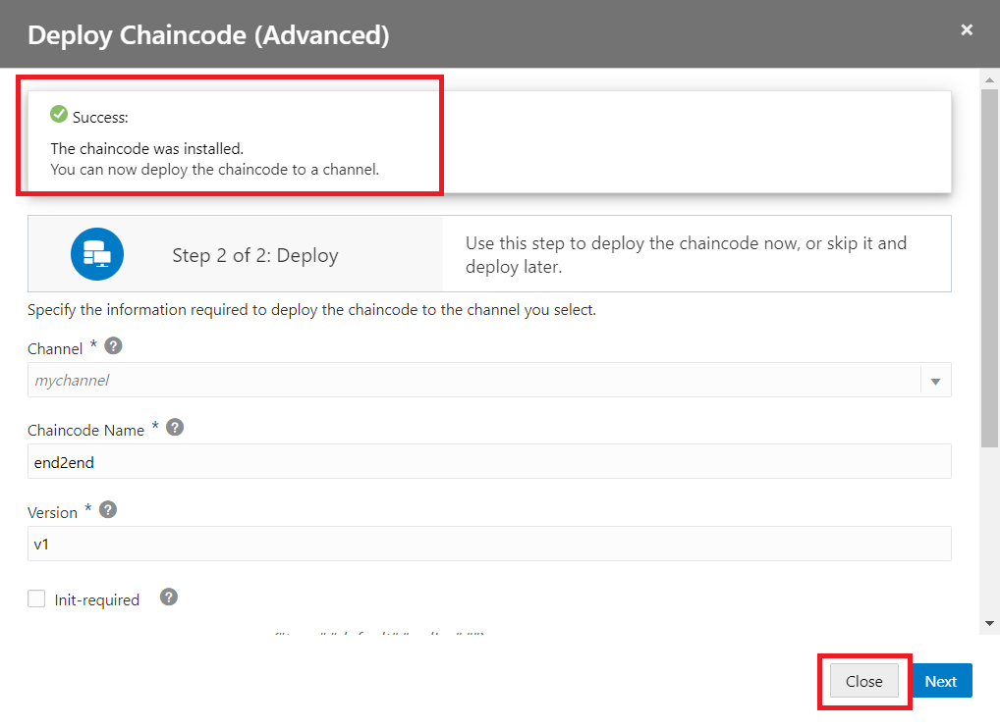
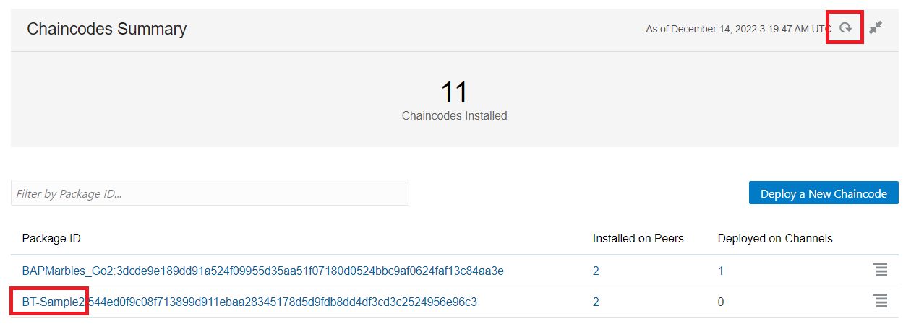
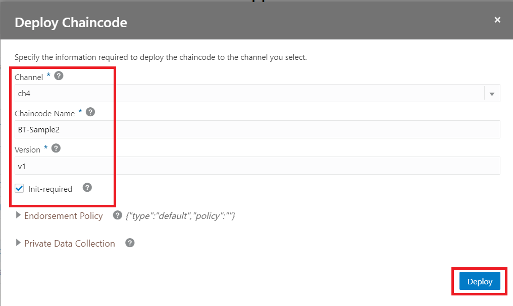
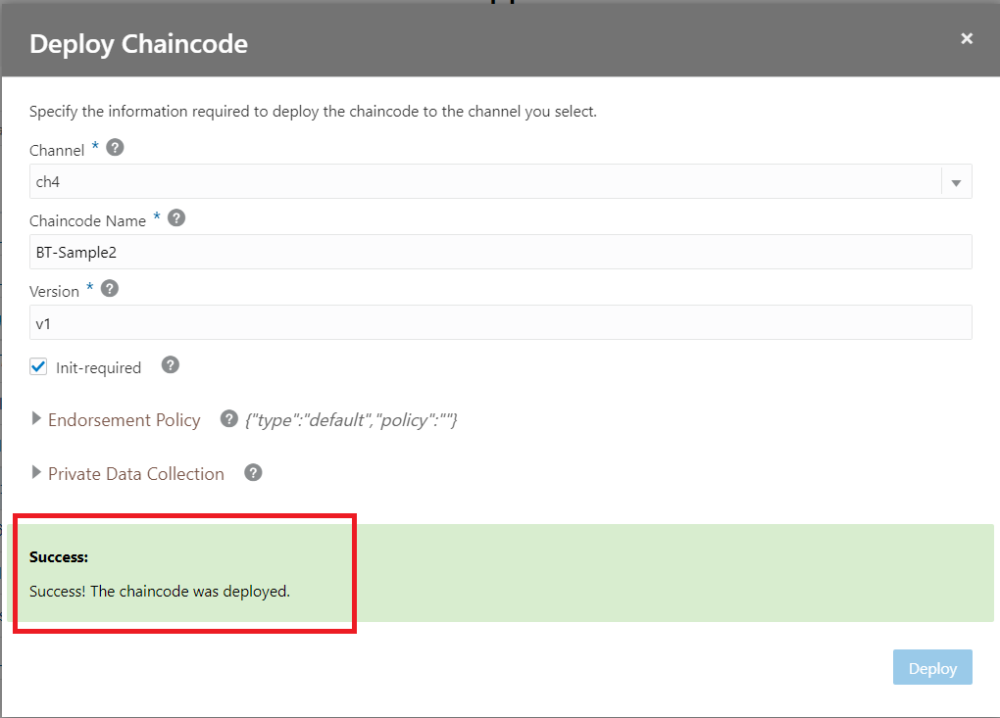

この文書ではOracle Blockchain Platform（OBP）でChaincodeをデプロイし、実行可能にする方法をステップ・バイ・ステップで紹介するチュートリアルです。
この文書は、2022年11月時点での最新バージョン(22.3.2)を元に作成されています。
-
前提 :
0. 前提の理解
0.1 Hyperledger FabricにおけるChaincodeのデプロイ
OBPはパーミッション型のブロックチェーンプロトコルであるHyperledger Fabricをベースとしたブロックチェーンプラットフォームです。 ブロックチェーン台帳に対して実行されるビジネスロジックであるChaincodeのデプロイのプロセスは、バージョン1.x系とバージョン2.x系で以下のように異なっています。そのため、このチュートリアルではv1.x系用の手順とv2.x系用の手順を併記しています。自身のお使いのOracle Blockchain PlatformインスタンスのベースとしているHyperledger Fabricのバージョンに合わせ、適切なほうをご利用ください。
-
v1.x系
v1.x系では、①各Organizationの作業として、Endorsementを行うPeerへのChaincodeのインストール、②Channelレベルの作業として、代表する単一のOrganizationがChaincodeをインスタンス化（instantiate）、の2段階のオペレーションによって実施され、Chaincodeが実行可能になります。
-
v2.x系
v1.x系では、各Organizationの作業として、①Endorsementを行うPeerへのChaincodeのインストールおよび ②Chaincode定義のApprove、③Channelレベルの作業として、必要数のApproveが得られていることを前提として、代表する単一のOrganizationがChaincode定義をCommit、の3段階のオペレーションによって実施され、Chaincodeが実行可能になります。
0.2 このチュートリアルでのブロックチェーン・ネットワーク構成
このチュートリアルの例では、 Founder2104 というFounderインスタンス（=Organization）と、 Member2104 というParticipantインスタンス（=Organization）から成るブロックチェーン・ネットワークとなっています。また、ch1という名前のChannelに、サンプルChaincodeをデプロイします。
任意のChannelで任意のChaincodeを、また、単一のインスタンス／Organizationから成るネットワークでも基本的には同一の手順でデプロイできます。
1.サンプルChaincodeの準備
デプロイするサンプルChaincodeをダウンロードし、必要なZipファイルを準備します。
-
Oracle Blockchain Platformのサービス・コンソールを開きます。
-
Developer Toolsのページを開き、左側メニューからSamplesのセクションを選択し、「Balance Transfer」のコーナーからDownload Samples hereをクリックするとインストーラがダウンロードされます。

-
ダウンロードしたサンプルChaincodeのZIPファイルをunzip（解凍）します。
-
サンプルにはGoとNode.js両方のChaincode、およびその他のマテリアルが含まれています。デプロイには、GoのChaincodeソースだけを含んだZIPファイルを作成する必要があります。
/artifacts/src/github.com配下にあるgoフォルダをZIPファイルに圧縮してください。ZIPファイル名は任意ですが、ここでの例ではBT_Sample.zipとしています。
2. Hyperledger Fabric v2.x系でのChaincodeのデプロイ
2.1. Chaincodeのインストール
デプロイするChaincodeをPeerノードにインストールします。この手順については各Organization（=インスタンス）での作業が必要ですが、手順は同一なのでここでは Founder2104 インスタンスでのステップのみを説明します。必要に応じて複数インスタンスで実施してください。
-
Oracle Blockchain Platformのサービス・コンソールを開きます。
-
Chaincodesのページを開き、Deploy a New Chaincodeをクリックします。

-
開いたウィザードで、Advanced Deploymentをクリックします。

-
インストールするChaincodeの情報を入力する画面が開きます。以下を参考に入力、指定した後、Nextをクリックします。

- Label: Chaincodeのパッケージに付与するラベル名を入力します。ここでは BT-Sample2 とします。
- Language: Chaincodeのプログラミング言語を選択します。ここではGoLangを選択します。
- Target Peers: ChaincodeをインストールするPeerノードを選択します。ここでは Peer0とPeer1 としています。
- Chaincode Source: Chaincodeのソースを含むZipファイルをアップロードします。ここでは前述の手順で作成しておいたBT_Sample.zipを指定します。
-
Chaincodeのインストールが成功すると、ダイアログが閉じて成功メッセージが表示され、デプロイの画面に遷移します。この画面から続けてデプロイを実施することも可能ですが、このチュートリアルでは後で別途実施することとします。Closeをクリックします。

なお、タイミングにより成功メッセージが表示されずダイアログが閉じる場合もあります。その場合は一覧画面のリフレッシュボタンをクリックし、インストールしたChaincodeが表示されることを確認してください。

-
ここまででChaincodeのインストールは完了です。Chaincodeのインストールを複数インスタンスで実施する場合は、別のインスタンスでここまでの手順を繰り返してください。
2.2. Chaincodeのデプロイ（ApproveとCommit）
インストールしたChaincodeをChannel上にデプロイし、実行可能にします。
注意
Oracle Blockchain Platformのデプロイ操作では、Hyperledger FabricのChaincodeライフサイクルのApproveとCommitが同時に実行（試行）されます。対象のChannelのLifecycleEndorsementポリシー設定により、Channelに参加するうちのどのOrganizationのApproveがそろっていればCommitが成功するかが変わってきます。
ここでの例では、Oracle Blockchain Platform上でChannelを作成した場合のデフォルトのLifecyclePolicyである Any Endorsement （Channel上のいずれかひとつのOrganizationのApproveのみでCommit可能）を前提としているため、 Founder2104 インスタンスでのデプロイ操作のみでChaincodeが稼働状態になります。
複数Organizationが参加するChannelで異なるLifecyclePolicyを用いている場合、単一のインスタンスでのデプロイ操作の時点ではApproveのみが成功し、Commitが成功しません。その場合はLifecyclePolicyに必要なだけ別のインスタンスでもデプロイ操作を行ってください。その際、ChannelやChaincode Name、Version、Endorsement Policyなどのパラメータが相違しないように注意してください。
-
Oracle Blockchain Platformのサービス・コンソールを開きます。
-
Chaincodesのページを開き、一覧から対象のChaincodeの行の右側にあるハンバーガーメニューボタンをクリックし、出てきたメニューからDeployをクリックします。

-
Chaincodeのデプロイにあたってのパラメータを入力する画面が開きます。以下を参考に入力、指定した後、Deployをクリックします。 
- Channel: Chaincodeを稼働させるChannelを選択します。ここでは ch1 とします。
- Chaincode Name: Chaincodeの識別名を入力します。ここでは BT-Sample2 とします。
- Version: Chaincodeのバージョン識別子を入力します。ここではデフォルトの v1 とします。
- Init required: Chaincodeの初期化処理（
Init()関数）の実行が必要かどうかを選択します。今回のサンプルは必要なので、チェックを入れます。 - Endorsement Policy: ChaincodeレベルのEndorsement Policyを指定します。ここでは何も指定しないでおきます（指定しない場合、任意、単一のOrganizationのEndorsementでPolicyが満たせる条件になります）。
- Private Data Collection: ChaincodeでTransient Mapを使用する場合に指定します。ここでは何も指定しないでおきます。
-
デプロイ（ApproveとCommit）のトランザクションが発行されます。Commitまで成功した場合は以下のように成功メッセージが表示され、ダイアログが閉じます。

-
ここまででChaincodeのデプロイ操作は完了です。複数のインスタンスでのデプロイ（ApproveとCommit）が必要な場合は、別のインスタンスでここまでの手順を繰り返してください。
2.3. Chaincodeの初期化
Chaincodeによってはデプロイ後にまず初期化処理（Init()関数）の実行が必要です。OBPでは、v1.x系のChaincodeのデプロイではInstantiate時に同時にInit()関数の実行も行っていましたが、v2.x系では別途実行が必要になります。
REST Proxy経由でREST API実行の場合、こちらのドキュメントを参照ください。
今回のBalance Transferサンプルの場合、REST APIのリクエストボディは以下のようになります。
{
"chaincode": "obcs-example02",
"args": [ "init","a","100","b","200" ],
"isInit": true,
"timeout": 18000,
"sync": true
}
3. Hyperledger Fabric v1.x系でのChaincodeのデプロイ
3.1. Chaincodeのインストール
デプロイするChaincodeをPeerノードにインストールします。この手順については各Organization（=インスタンス）での作業が必要ですが、手順は同一なのでここでは Founder2104 インスタンスでのステップのみを説明します。必要に応じて複数インスタンスで実施してください。
-
Oracle Blockchain Platformのサービス・コンソールを開きます。
-
Chaincodesのページを開き、Deploy a New Chaincodeをクリックします。
-
開いたウィザードで、Advanced Deploymentをクリックします。
-
インストールするChaincodeの情報を入力する画面が開きます。以下を参考に入力、指定した後、Nextをクリックします。

- Chaincode Name: Chaincodeの名前を入力します。ここでは BT-Sample とします。
- Version: Chaincodeのバージョン識別子を入力します。ここではデフォルトの v1 とします。
- Target Peers: ChaincodeをインストールするPeerノードを選択します。ここでは Peer0とPeer1 としています。
- Chaincode Source: Chaincodeのソースを含むZipファイルをアップロードします。ここでは前述の手順で作成しておいたBT_Sample.zipを指定します。
-
Chaincodeのインストールが成功すると、成功メッセージが表示されるとともに、Instantiateの画面に遷移します。この画面から続けてInstantiateを実施することも可能ですが、このチュートリアルでは後で別途実施することとします。Closeをクリックします。

-
ここまででChaincodeのインストールは完了です。Chaincodeのインストールを複数インスタンスで実施する場合は、別のインスタンスでここまでの手順を繰り返してください。なお、その際にはChaincode NameとVersionの指定値がインスタンス間で食い違わないよう、同一の値を指定してください。
3.2. ChaincodeのInstantiate
インストールしたChaincodeをChannel上でInstantiate（インスタンス化）し、実行可能にします。複数インスタンス（＝Organization）のネットワークの場合でも、この手順についてはいずれか代表する単一のインスタンスのみで実行します。
なお、v1.x系ではInstantiate時にInitialize（初期パラメータを指定してのInit()関数の実行）も実行されます。
-
Oracle Blockchain Platformのサービス・コンソールを開きます。
-
Chaincodesのページを開き、一覧から対象のChaincodeの行の左側にある三角ボタンをクリックします。当該Chaincodeのバージョン一覧が開くので、Instantiateする対象のバージョンの行の右側にあるハンバーガーメニューボタンをクリックし、出てきたメニューからInstantiateをクリックします。

-
ChaincodeのInstantiateにあたってのパラメータを入力する画面が開きます。以下を参考に入力、指定した後、Instantiateをクリックします。

- Channel: Chaincodeを稼働させるChannelを選択します。ここでは ch1 とします。
- Peers: 当該Channelで当該Chaincodeの実行（Endorsement）可能にするPeerノードを指定します。ここでは Peer0とPeer1 としています。
- Initial Parameter: ChaincodeにInstantiate時に実行される関数（
Init()関数）に渡す引数を指定します。ここでは["a","100","b","200"]としています。 - Endorsement Policy: ChaincodeレベルのEndorsement Policyを指定します。ここでは何も指定しないでおきます（指定しない場合、任意、単一のOrganizationのEndorsementでPolicyが満たせる条件になります）。
- Transient Map: ChaincodeでTransient Mapを使用する場合に指定します。ここでは何も指定しないでおきます。
- Private Data Collection: ChaincodeでPrivate Data Collectionを使用する場合に指定します。ここでは何も指定しないでおきます。
-
Instantiateのトランザクションが発行されます。実際にInstantiateが完了するまでには1～数分程度要します。
-
Instantiateのトランザクションの実行が完了すると、サービス・コンソール上部の通知欄に通知されます。クリックすると成功／失敗メッセージが表示されます。成功メッセージが出ていればInstantiateは完了です。